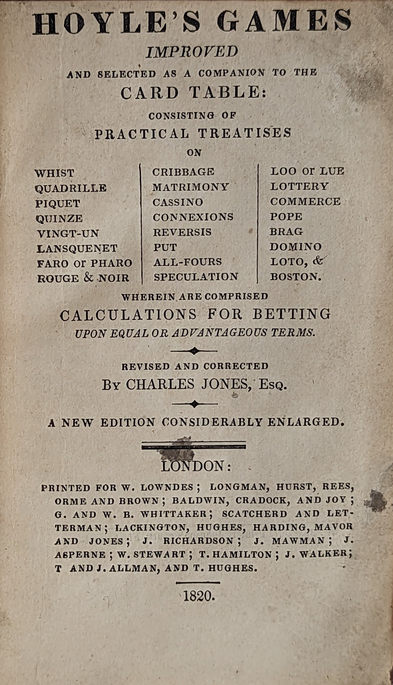
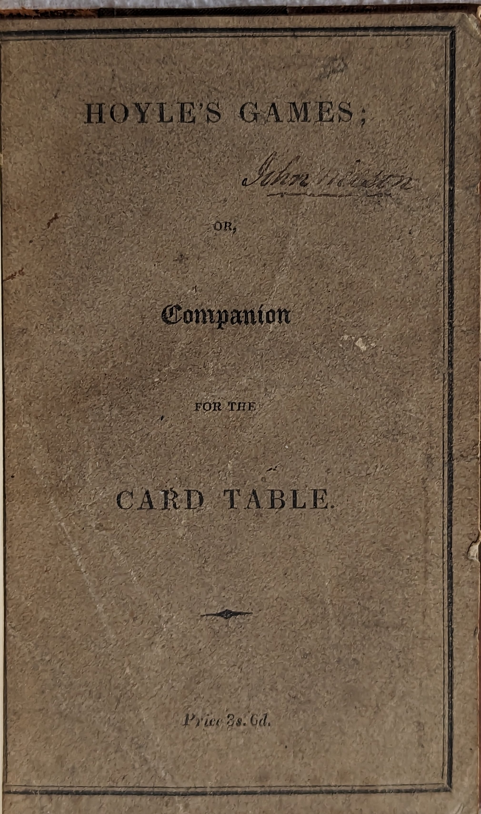

A Descriptive Bibliography of Edmond Hoyle
Copyright © 2014-26 by David Levy
(page updated 2025-04-29)User Guide
Jones.10-2
Companion to the Card Table, printed for W. Lowndes et al, extracted from the tenth London edition, 1820.
 |
Title: | HOYLE'S GAMES | IMPROVED | AND SELECTED AS A COMPANION TO THE | CARD TABLE: | CONSISTING OF | PRACTICAL TREATISES | ON | [8 lines to left of rule] WHIST | QUADRILLE | PIQUET | QUINZE | VINGT-UN | LANSQUENET | FARO or PHARO | ROUGE & NOIR | [8 lines between two rules] CRIBBAGE | MATRIMONY | CASSINO | CONNEXIONS | REVERSIS | PUT | ALL-FOURS | SPECULATION | [8 lines to right of rule] LOO or LUE | LOTTERY | COMMERCE | POPE | BRAG | DOMINO | LOTO, & | BOSTON. | WHEREIN ARE COMPRISED | CALCULATIONS FOR BETTING | UPON EQUAL OR ADVANTAGEOUS TERMS. | [short decorative rule] | REVISED AND CORRECTED | By CHARLES JONES Esq. | [short decorative rule] | A NEW EDITION CONSIDERABLY ENLARGED. | [short double rule] | LONDON: | PRINTED FOR W. LOWNDES; LONGMAN, HURST, REES,| ORME AND BROWN; BALDWIN, CRADOCK, AND JOY; | G. AND W. B. WHITTAKER; SCATCHERD AND LET-|TERMAN; LACKINGTON, HUGHES, HARDING, MAVOR | AND JONES; J. RICHARDSON; J. MAWMAN; J; | ASPERNE; W. STEWART; T. HAMILTON; J. WALKER; | T. AND J. ALLMAN, AND T. HUGHES | [short rule] | 1820 |
| Collation: | 18o: A2 B–R6(R6+1) [$½ signed]; 99 leaves, pp. [iii–vi] vii–viii, [1] 2–192 |
| Wrapper: |  |
[seven lines within oxford border] HOYLE'S GAMES; | OR, | Companion | FOR THE | CARD TABLE | [short decorateive rule] | Price 3s. 6d. |
| Contents: | Signature (Page) Reference | Contents | Signature (Page) Reference | Running Titles |
| A1r (iii) | title | |||
| A1v (iv) | colophon | |||
| A2r (v) | ‘CONTENTS. | [...]’ | |||
| A2v (vi) | blank | |||
| B1r–R6+1v (vii–192) | see Jones.10. | B1r–R6+1v (vii–192) | see Jones.10. |
| Publisher: | William Lowndes, Longman, Hurst, Rees, Orme, and Brown, Baldwin, Cradock, and Joy, G. and W. B. Whittaker, Scatcherd and Letterman, Lackington, Hughes, Harding, Mavor, and Jones, John Richardson, Joseph Mawman, James Asperne, William Stewart, Thomas Hamilton, J. Walker, Thomas and Joseph Allman, Thomas Hughes |
| Printer: | William Shackell (colophon, Longman Archives) |
| Notices: | 1820-02-11 The Morning Post: "This day is published, price 8s. bound in red sheep, a new edition, considerably enlarged, of Hoyle's Games Imrpoved...Revised and corrected. By Charles Jones. Esq...Of whom may be had, separately, Hoyle's Games Improved and Selected, as a Companion to the Card Table, price 3s. 6d. boards. or 4s. 6d. in paper case, with gilt edges. Also Hoyle's Games of Whist and Quadrille, price 2s. boards." |
| Price: | 3s.6d. boards (advertisement, label), 4s.6d. slip case (advertisement) |
| References: | Jessel 927 |
| Colophon: | ‘[rule] | W. Shackell, Printer, Johnson's-court, Fleet-street.’ |
| Copies Seen: | ABu [MN.13.280]; BFl [I.795/JONE (b1163080)]; O [Jessel f.609]; Levy [1833] |